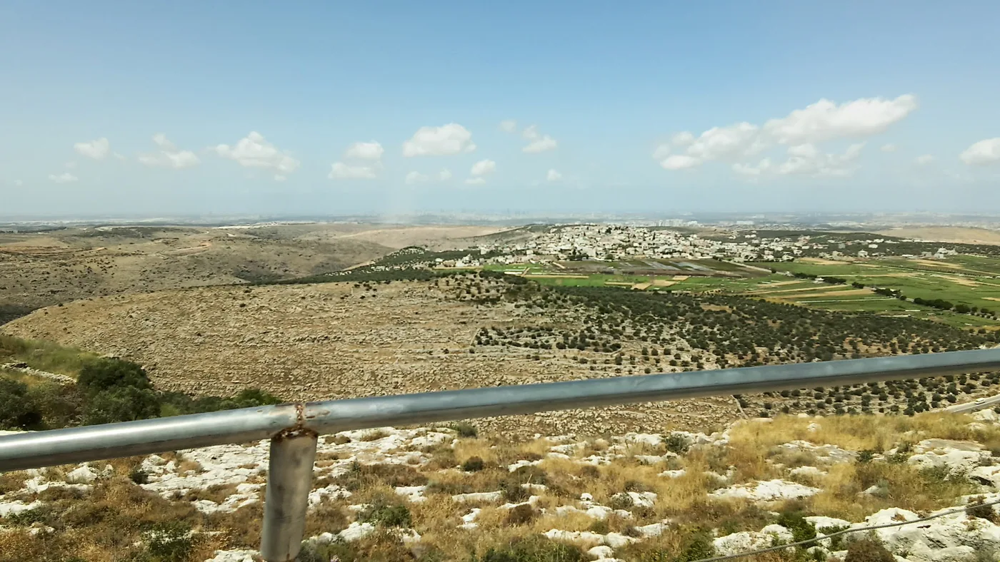
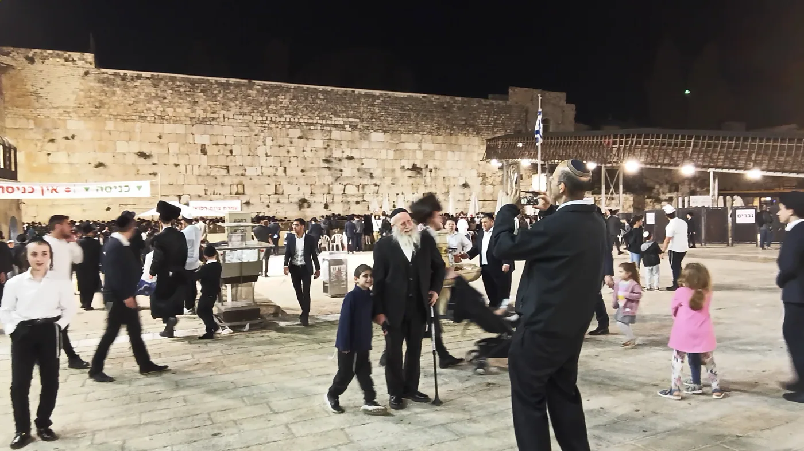
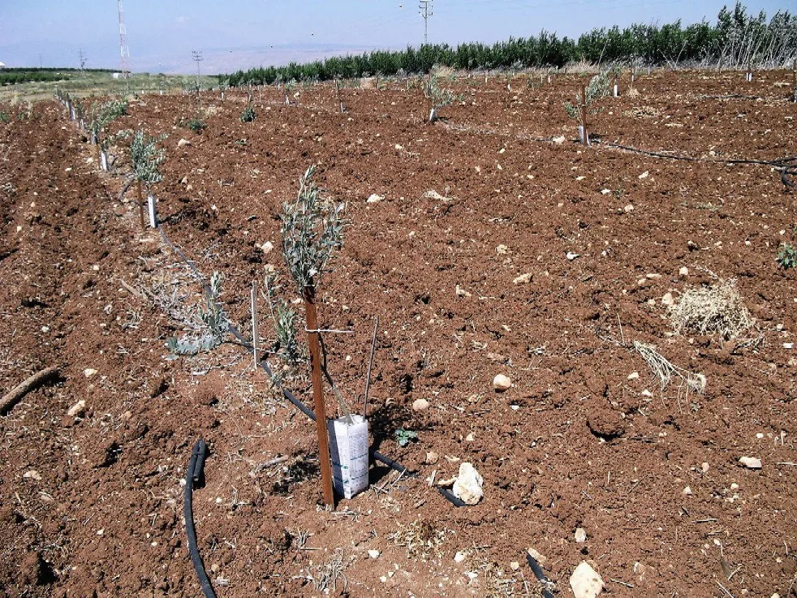
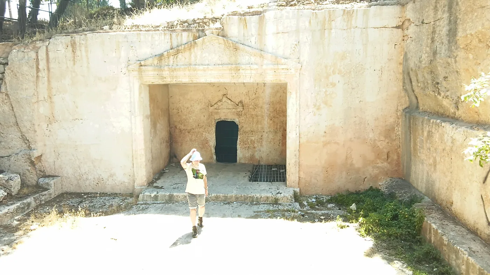

משנה: אמר רבן שמעון בן גמליאל: לא היו ימים טובים לישראל כחמשה עשר באב וכיום הכפורים, שבהן בנות ירושלים יוצאות בכלי לבן שאולין, שלא לבייש את מי שאין לו, כל הכלים טעונין טבילה. ובנות ירושלים יוצאות וחולות בכרמים, ומה היו אומרות: בחור! שא נא עיניך וראה מה אתה בורר לך, אל תתן עיניך בנוי, תן עיניך במשפחה, שקר החן והבל היפי אשה יראת ה' היא תתהלל, ואומר: תנו לה מפרי ידיה ויהללוה בשערים מעשיה. וכן הוא אומר צאינה וראינה בנות ציון במלך שלמה בעטרה שעטרה לו אמו ביום חתנתו וביום שמחת לבו, ביום חתנתו - זה מתן תורה, וביום שמחת לבו - זה בנין בית המקדש, שיבנה במהרה בימינו.
רש"י: במלך שלמה - במלך שהשלום שלו. אמו - כנסת ישראל. זה מתן תורה - יום הכפורים, שניתנו בו לוחות האחרונות. (לרש"י וכן הוא אומר זה ראיה על מעלת יום הכיפורים)
הר"ן על הרי"ף כתב: צאינה וראינה בנות ציון. משמע שיוצאות וחולות:
לר"ן הדרשה כך צאינה (לכרמים) וראינה (בחור) בנות ציון (ירושלים) בשתי ימים: ביום חתונתו (יוהכ"פ) וביום שמחת ליבו (ט"ו באב).
ובגמ' ל': אמרו בשלמא יוה"כ משום דאית ביה סליחה ומחילה יום שנתנו בו לוחות אחרונות. אלא ט"ו באב מאי היא, ואמרו בזה כמה טעמים (הובא באריכות לקמן פרק ו. ):
יום שהותרו בו שבטים לבוא זה בזה וכו',
שהותר בו שבט בנימין לבא בקהל וכו',
שכלו בו מתי מדבר,
שביטל הושע בן אלה פורסדיות שהושיב ירבעם בן נבט על הדרכים שלא יעלו ישראל לרגל וכו',
שנתנו הרוגי ביתר לקבורה,
שפסקו מלכרות עצים למערכה עיי"ש.
(וסימנך חמשה עשר ר''ת - ח-חיתון, מ-מדבר, ש-שבטים,ה-הרוגי, ע-עצים, ש-שבט בנימין ר-רגל)
פרק ב'
וַיֹּאמְרוּ הִנֵּה חַג־יְדֹוָד בְּשִׁלוֹ (עיין הערה [1]) מִיָּמִים יָמִימָה אֲשֶׁר מִצְּפוֹנָה לְבֵית־אֵל מִזְרְחָה הַשֶּׁמֶשׁ לִמְסִלָּה הָעֹלָה מִבֵּית־אֵל שְׁכֶמָה וּמִנֶּגֶב לִלְבוֹנָה: וַיְצַוּוּ אֶת־בְּנֵי בִנְיָמִן לֵאמֹר לְכוּ וַאֲרַבְתֶּם בַּכְּרָמִים: וּרְאִיתֶם וְהִנֵּה אִם־יֵצְאוּ בְנוֹת־שִׁילוֹ לָחוּל בַּמְּחֹלוֹת וִיצָאתֶם מִן־הַכְּרָמִים וַחֲטַפְתֶּם לָכֶם אִישׁ אִשְׁתּוֹ מִבְּנוֹת שִׁילוֹ וַהֲלַכְתֶּם אֶרֶץ בִּנְיָמִן: וְהָיָה כִּי־יָבֹאוּ אֲבוֹתָם אוֹ אֲחֵיהֶם לרוב לָרִיב אֵלֵינוּ וְאָמַרְנוּ אֲלֵיהֶם חָנּוּנוּ אוֹתָם כִּי לֹא לָקַחְנוּ אִישׁ אִשְׁתּוֹ בַּמִּלְחָמָה כִּי לֹא אַתֶּם נְתַתֶּם לָהֶם כָּעֵת תֶּאְשָׁמוּ: ס

ר' צדוק (פרי צדיק): משנה (תענית כ"ו ב) אמר רבי שמעון בן גמליאל לא היו ימים טובים לישראל כט"ו באב וכו'. ואחר כך בגמרא (ל' ב) אמרו טעמים על זה על מה שלא היו ימים טובים כזה אבל היכן מצינו רמז בתורה לזה שנקרא ט"ו באב יום טוב?
נראה לי שהוא ממה שנאמר (שופטים כ"א, י"ט - כ"א) הנה חג ה' בשילו מימים ימימה וגו' והנה אם יצאו בנות שילו לחול במחולות וגו'. ולא פירש איזה חג הוא מימים ימימה...לכן נראה דחג ה' בשלו וגו' המכוון על ט"ו באב דכל החגים לא נקראו חג ה'.
הלכות חמשה עשר באב בזמן הזה:
תחנון ותענית בט"ו באב
בבית יוסף מובא מחלוקת האם לומר תחנון בט''ו באב,
דעת הרוקח שצריך לומר תחנון שכן קימ''ל שבטלה מגילת תענית, וא''כ לא נוהגים שמחה בכל הימים שארעו בהם ניסים לאבותינו וממילא ה''ה ט''ו באב.
לעומת זאת הבית יוסף אומר וכן פסק בשו''ע (קלא,ו) שהמנהג הוא שלא לומר תחנון בט''ו באב, ולא מסביר טעם המנהג, ומאי שנא מהא דקימ''ל בטלה מגילת תענית.
מתרץ המ''א: שהיה יום טוב גדול בזמן המקדש, דהינו היות וזה היה יום גדול מאוד בזמן המקדש, מסתבר שאין דינו כשאר ימים טובים שבטלו.
עוד ניתן לחלק (ע''פ מג''א תקעג ב) שט''ו באב שאני שמוזכר במשנה בהדיא שהוא יום טוב, משא''כ שאר ימים שלא מוזכרים במשניות.
עוד כתבו האחרונים (מ''ב תקעג ז) שאין להתענות בחמשה עשר באב, אפילו חתן ביום חופתו.
ויש בזה חידוש, שכן בכל הימים שרק מנהג לא לומר בהם תחנון חתן מתענה בהם כגון ל"ג בעומר, חודש ניסן, הימים שמר"ח סיון עד שבועות, הימים שבין יוה"כ לסוכות, אפ''ה בט''ו באב אין מתענים היות ויום זה מוזכר להדיא בגמ'.
ובאליהו רבה (תק''ע ז) כתב חידוש גדול: שאדם שנדר להתענות סך ימים חוץ מימים טובים שהדין הוא שלפעמים צריך להתענות אפילו בחנוכה ופורים (עיין פרטי הדינים באו''ח סימן תק''ע) אפילו הכי בט''ו באב אין צריך להתענות דחשיב יום טוב.
בספר סדר היום (סדר ט''ו באב) כתב: ראוי להתנהג בט"ו באב בשמחה וששון, לתת שבח והודאה למקום ששמחנו, וצריך להרחיק יגון ואנחה ממנו.
דין עם העכום.
נפסק בשולחן ערוך סימן תקנא סעיף א' על פי הגמ': משנכנס אב ממעטין בשמחה; ובר ישראל דאית ליה דינא בהדי כותי, לישתמיט מיניה דריע מזליה. ,
עד מתי אין לעשות דין עם העכו''ם?
במ''ב מביא ב' דעות: א. עד ר''ח אלול (מג''א) ב. עד ט' באב (או י' באב) (קרבן נתנאל).
בבן איש חי - הלכות שנה ראשונה - פרשת דברים כתב: אמרו רבותינו זכרונם לברכה, בר ישראל דאית ליה דינא בהדי עכו"ם, לישתמיט מיניה, עד ראש חודש אלול, ויש אומרים עד תשעה באב, דהיינו עד אחר עשרה באב, וזו הסברה היא עיקר, דאין צריך להשתמט עד ראש חודש אלול, אלא רק עד אחר עשרה באב, ובפרט כי בט"ו באב, צריך לעשות שמחה, מפני שיש עלוי לשכינה, כמו שכתוב בזוהר הקדוש ח"ב דף קצ"ה, וכיון שעלה חודש זה ביום ט"ו, לא ירד, דמעלין בקודש.
לימוד תורה בלילה מטו באב
שולחן ערוך יורה דעה הלכות תלמוד תורה סימן רמו סעיף כג. מי שרוצה לזכות בכתרה של תורה, יזהר בכל לילותיו ולא יאבד אפי' אחת מהן בשינה, באכילה ושתיה ושיחה וכיוצא בהם, אלא בדברי חכמה ותלמוד תורה. הגה: כי אין אדם לומד רוב חכמתו כי אם בלילה. (לשון הטור מרמב"ם).
ויש לאדם להתחיל ללמוד בלילה מט"ו באב ואילך, ומאן דלא מוסיף, יסיף. (נ"י פרק יש נוחלין).
מקור הרמ"א בסוגיא בתענית וב"ב שם אמרו: מכאן ואילך (מט"ו באב) דמוסיף יוסיף (חיים) ודלא מוסיף יסיף מאי יסיף אמר רב יוסף תקבריה אימיה:
רש"י: מכאן ואילך - מחמשה עשר באב ואילך, דמוסיף לילות על הימים לעסוק בתורה יוסיף חיים על חייו: דלא יוסיף - לעסוק בתורה בלילות: תקבריה אימיה - כלומר ימות בלא עתו:
כעין זה הובא במגן אברהם על או"ח סימן רלח: (וכן במ''ב סימן א) הב"ח כתב שהאחרונים קבלו משכבי עד קומי פירוש משבועות (שוקרים במגילת רות שכבי פה) עד ט"ב שכבי ומקומי עד שכבי פי' מט"ב (שקורים במגילת איכה קומי רוני בלילה, ובסוף מסכת תמיד אמרו תני רבי חייא כל העוסק בתורה בלילה שכינה כנגדו שנאמר קומי רוני בלילה וגו' נוכח פני יי' (איכה ב')) עד שבועות קומי פי' ללמוד בלילה. ובע"ש כתב מט"ו באב עד ט"ו באייר. וי"א דזמן שינה הוא ח' שעות וסימן ישנתי א"ז יניח לי ונ"ל דהכל לפי מה שהוא אדם וכמ"ש סי' רל"א ע"ש:
על דרך הפשט: עד ט''ו באב אין שמונה שעות בלילה (במיוחד לפי שיטת ר''ת) לכן אין חיוב ללמוד בלילה, אבל מט''ו באב הלילה מתארך יותר משמונה שעות ולכן צריך להתחיל ללמוד בלילה.
ויש להקשות הרמב''ם כתב שלא יאבד אפילו לילה אחת בשינה ואילו הרמ''א כותב שעד ט''ו באב מותר לישון?
ובאמת כבר בגמ' מסכת עירובין דף סה עמוד א מצאנו סתירה: אמר רב יהודה: לא איברי ליליא אלא לשינתא. אמר רבי שמעון בן לקיש: לא איברי סיהרא אלא לגירסא.
כתב תוס' אלא לשינתא - כמו לילי תקופת תמוז. ובשו''ע הרב כתב הלכות תלמוד תורה פרק ד אף על פי שמצוה ללמוד ביום ובלילה אין אדם לומד רוב חכמתו אלא בלילה לפיכך מי שרצה לזכות זכות בכתר תורה יזהר בכל לילותיו ולא יאבד אפילו אחת מהן בשינה ואכילה ושתיה ושיחה וכיוצא בהן אלא בתלמוד תורה ואפילו בליל[י] תקופת תמוז יש ללמוד מעט ומט"ו באב ואילך יוסיף מעט מעט ודלא מוסיף יאסף בלא זמנו כמ"ש באו"ח סי' רל"ח. (אמנם בפוסקים דלעיל משמע שלא צריך כלל משבועות).
הנהגות ט''ו באב.
א. ראוי לאכול לחם כדי לזכות לומר ביום זה ברכת הטוב והמטיב שבברכת המזון שכן ברכה זו נתקנה ביום זה.
ב. ראוי לומר ברכה זו בכוונה גדולה, ובעיקר לכווין במילים הטוב והמטיב, לזכות שיתגלה טוב האב.
ג. לנוסח אשכנז ראוי לכוין לחמש עשרה ברכות שיש בברכה זו כמבואר בפנים.
ד. מצווה להודות לקב''ה בטו באב על שהשיב אותנו לארץ ישראל, לזכות לקיים מצווה שהיא שקולה ככל המצוות כמו שאמרו חז''ל בספרי (דברים פרשת ראה פיסקא פ) מעשה ברבי יהודה בן בתירה ורבי מתיה בן חרש ורבי חנניה בן אחי רבי יהושע ורבי יונתן שהיו יוצאים חוצה לארץ והגיעו לפלטום וזכרו את ארץ ישראל זקפו עיניהם וזלגו דמעותיהם וקרעו בגדיהם וקראו את המקרא הזה (דברים/יא/לא) וירשתם אותה וישבתם בה ושמרתם לעשות את כל החקים האלה אמרו ישיבת ארץ ישראל שקולה כנגד כל המצות שבתורה. מעשה ברבי אלעזר בן שמוע ורבי יוחנן הסנדלר שהיו הולכים לנציבים אצל רבי יהודה בן בתירה ללמוד ממנו תורה והגיעו לציידן וזכרו את ארץ ישראל זקפו עיניהם וזלגו דמעותיהם וקרעו בגדיהם וקראו את המקרא הזה וירשתם אותה וישבתם בה ושמרת לעשות את כל החוקים האלה ואת המשפטים אמרו ישיבת ארץ ישראל שקולה כנגד כל המצוות שבתורה חזרו ובאו להם לארץ ישראל. וכתב הרמב"ן ויקרא פרק יח "כי עיקר כל המצות ליושבים בארץ ה'. ולפיכך אמרו בספרי ישיבת ארץ ישראל שקולה כנגד כל המצות שבתורה" עכ''ל. וכשם שתיקנו חז''ל הטוב והמטיב בטו באב על שניתנו לקבורה (ולימדו אותנו שיש להודות על קצת טוב שיש) כך ראוי להודות הרבה מאוד שזכינו שהתבטלה קצת גזירת הגלות וחזרנו לארץ ישראל ברחמים.
ה. אם יש בידו להציע שידוך ראוי להשתדל ביום זה להציע שידוכים.
ו. יתפלל הרבה שיזכה להשכין שכינה בביתו, שביתו יהיה בית המקדש, וכמו שבזמן חז''ל השתדלו ביום זה לבנות בתי מקדש של זכו שכינה בינהם.
ז. ראוי ללמוד ביום זה את סוגית ט''ו באב בגמ' תענית ובגמ' ב''ב, מחלוקות הראשונים, ובאורי האחרונים, וכן חוברת זו, ודברי החסידות דכאן.
ח. ראוי לכל יהודי להתחזק מאוד ביום זה להוסיף אהבה ואחווה שלום ורעות עם כל יהודי, ובמיוחד עם רעיתו.יש להוסיף ללמוד תורה מט''ו באב מדינא כמבואר, וראוי במיוחד להוסיף בלילה זה, שמסתבר שבלילה זה לימוד התורה מועיל לשכינה יותר מכל לילה, ועם יכול לקום חצות וללמוד עד לאחר תפילת שחרית אשריו מה טוב חלקו.
ט. ראוי לעשות סעודה ביום זה ולשמוח בגאולה השלימה שתהיה בב''א.(סדר היום, וכ"כ בעבודת הקודש)
י. יכווין הרבה בברכת שים שלום וכן בברכת כהנים במילה שלום, שירבה השלום והאחדות בעם ישראל.
יא. יאמר חמש עשרה פרקי שיר המעלות שבתהילים, שהם כנגד שם י-ה.
שאלות
לא היו ימים טובים לישראל כחמישה עשר באב, משמעות הלשון שהוא גדול יותר מכל הימים הטובים גם משלוש רגלים, וצריך להבין מה גודל העילוי של המאורעות שאירעו בו שמפני זה הוא גדול יותר משאר ימים טובים?
רבים נתקשו בביאור אופן השמחה שנהגו ישראל בימים אלו, על מה ראו ככה לחוג ימים נעלים אלו דווקא ביציאת בנות ישראל במחול?
בפרט מה שעסקו בשידוכין ביום זה אומר דרשני - לעסוק ביום כיפור בשידוכין מדוע?
מדוע ט"ו באב ויום הכיפורים הוא חג בנות ישראל?
ומדוע דווקא בנות ירושלים והרי זהו יום טוב של כל ישראל?
מדוע משנה זו נשנתה במסכת תענית העוסקת באבל ובצום על החורבן?
בגמרא נאמרו ששה טעמים על מהות ט"ו באב, האם יש קשר בין כל הטעמים?
שאלות נוספות
מה הקשר בין יום הכיפורים לט"ו באב ששניהם ימים טובים שנהגו בהם מנהג משותף וע"כ יש קשר ביניהם?
המשנה מסיימת וכן הוא אומר 'צאינה וראינה בנות ציון במלך שלמה' וגו', הר"ן פירש: צאנה משמע שיוצאות וחולות (וכנראה דייק את הלשון בנות ציון מכאן שהבנות צריכות לצאת), לפי הר"ן צריך להבין איזה שייכות יש לפסוק זה שמדבר על כנס"י והקב"ה עם מחולות של בנות ירושלים שנעשו לצורך שידוכיהן עם בחורי ישראל?
מדוע דווקא בנות ירושלים יצאו למחולות?
ועוד שבשופטים כתוב הנה חג ה' בשלו משמע שגם לשלו היה זה חג?
ויש להקשות מדוע דווקא לשלו היה יום זה חג?
למה הלכו לחול דווקא בכרמים, וכן בשופטים כתוב לְכוּ וַאֲרַבְתֶּם בַּכְּרָמִים מה ענין הכרמים לכאן?

טעמי טו באב בגמ'
שנינו בגמרא: תענית [דף כו עמוד א] אמר רבן שמעון בן גמליאל: לא היו ימים טובים לישראל כחמשה עשר באב וכיום הכפורים. בשלמא יום הכפורים - משום דאית ביה סליחה ומחילה, יום שניתנו בו לוחות האחרונות. אלא חמשה עשר באב מאי היא? -
אמר רב יהודה אמר שמואל: יום שהותרו שבטים לבוא זה בזה. מאי דרוש זה הדבר אשר צוה ה' לבנות צלפחד וגו' - דבר זה לא יהא נוהג אלא בדור זה.
אמר רב יוסף אמר רב נחמן: יום שהותר שבט בנימין לבוא בקהל, שנאמר ואיש ישראל נשבע במצפה לאמר איש ממנו לא יתן בתו לבנימן לאשה. מאי דרוש? אמר רב: ממנו, ולא מבנינו.
רבה בר בר חנה אמר רבי יוחנן: יום שכלו בו מתי מדבר. דאמר מר: עד שלא כלו מתי מדבר לא היה דבור עם משה, שנאמר ויהי כאשר תמו כל אנשי המלחמה למות וידבר ה' אלי, אלי היה הדבור.
עולא אמר: יום שביטל הושע בן אלה פרוסדיות שהושיב ירבעם בן נבט על הדרכים, שלא יעלו ישראל לרגל, ואמר: [דף לא עמוד א] לאיזה שירצו יעלו.
רב מתנה אמר: יום שנתנו הרוגי ביתר לקבורה. ואמר רב מתנה: אותו יום שנתנו הרוגי ביתר לקבורה תקנו ביבנה הטוב והמטיב, הטוב - שלא הסריחו, והמטיב - שנתנו לקבורה.
(עיין הערה [1])
רבה ורב יוסף דאמרי תרוייהו: יום שפסקו מלכרות עצים למערכה. דתניא, רבי אליעזר הגדול אומר: מחמשה עשר באב ואילך תשש כוחה של חמה, ולא היו כורתין עצים למערכה, לפי שאינן יבשין. אמר רב מנשיא: וקרו ליה יום תבר מגל.
מכאן ואילך, דמוסיף - יוסיף, ודלא מוסיף - (יאסף) +מסורת הש"ס: יסיף+. (תני רב יוסף): מאי יאסף? אמר רב יוסף: תקבריה אימיה.
[1]. מהר"ל: ספר נתיבות עולם א - נתיב העבודה - פרק יח. ומה שתקנו הטוב והמטיב ביבנה על הרוגי ביתר הטוב שלא הסריחו והמטיב שנתנו לקבורה, פי' זה כי ראוי הוא שיהיו מתקנין הטוב והמטיב ביבנה, כי אחר שנחרבה ביתר ושלט מדת הדין בישראל בשביל חטאם ובא העונש עליהם ועם כל זה נהג הש"י עמהם בטוב, ודבר זה הוא יותר על כל הטובות שהש"י נוהג כאשר מתוך מדת הדין בא הטוב הזה שלא הסריחו ונתנו לקבורה כי הוא מורה על מדת טובו לגמרי.
ולכך כמו שכל אחד תקן הברכה הראוי לו לתקן, כי משה תקן ברכת הזן כשבא להם המן ויהושע תקן ברכת הארץ כשבאו לארץ ודוד תקן בונה ירושלים, כמו כן תקנו ביבנה הטוב והמטיב אחר שבא עליהם פורעניות בשביל חטא שלהם ומתוך הדין הקשה והחושך שהיו יושבים הטיב הש"י עמהם מצד מדת טובו זהו הטוב והמטיב.
ופירשו הטוב שלא הסריחו ומטיב שנתנו לקבורה כי טובה על טובה כמו זה שלא הסריחו ונוסף על זה שנתנו לקבורה, שנקרא זה הטוב והמטיב כאשר יש טובה על טובה בפעם אחד: עכ"ל.
נ.ב. ניתן להוסיף ביום בו התגלה טוב ה' יותר מכל הטובות (כלשון המהר"ל) הוא היום הראוי לגאולה לעתיד לבוא כדיבואר להלן. ולא לחינם אנו מזכירים דבר זה כל יום לעורר את אותו טוב ה' בגלות.

שאלות על טעמי הגמ'
הנה איתא בגמרא ששה טעמים על יום טוב של ט"ו באב ומכל הטעמים אין בהם טעם מספיק שעבור זה יהיה נקבע בתמידות ליום טוב כשאר הימים טובים שהארת הנס הראשון שהיה לכלל ישראל באותו זמן נשפע הארה מקדושה זו גם בהווה לכלל ישראל כמו מאז. מה שאין כן בטעמים של ט"ו באב שנזכרו בגמרא שהיה רק בפרט ענין של אותו הדור בלבד. כמו הטעם שהותרו השבטים לבוא זה בזה ושהותר שבט בנימין לבוא בקהל וכן כולם. אם כן מהו ענינו להיות עבור זה יום טוב גם היום לכלל ישראל? (קושית הפרי צדיק - ר' צדוק הכהן מלובלין)
בפשטות המחול בשילו (המופיע בנביא שופטים מובא לעיל במקורות) היה בט"ו באב שהרי מופיע שם שחיפשו זיווג והיה מחולות בכרמים ממש כעין המשנה בתענית (ויש שרוצים לומר שגם היתר השבטים לבוא זה בזה היה באותו יום שהרי שבט בנימין לקחו נשים משבטים אחרים) והנה הפסוק אמר חג ה' בשלו מימים ימימה נמצא שהיה חג כבר לפני שהותר שבט בנימין לבוא בקהל א"כ כיצד אומרת הגמרא שטעם החג הוא מחמת שהותר שבט בנימין לבוא בקהל הרי מוכח בפסוק שכבר לפני כן היה חג?
ואם היה חג רק מחמת שפסקו מתי מדבר למה אמרה הגמ' טעמים נוספים?
לכאורה למדנו שלא הטעמים גורמים אלא יש סוד מסוים ביום זה והטעמים הם רק סימן ליום זה.
אחד הטעמים לשמחת ט"ו באב הוא יום שכלו מתי מדבר וחזר הדיבור למשה בחיבה.
שואל הגבורת ארי: תימא לשמחה מה זו עושה (כלומר איזה נס אירע באותו יום שלכן נקבע כיום טוב לעם ישראל) הא כיון דסילוק הדיבור היה בעבורם ממילא ראוי לחזור לבתר דכלו?
טעם נוסף אמרו חז"ל יום שביטל הושע בן אלה את השומרים שהושיב ירבעם שמנעו מישראל לעלות לירושלים ברגל, וצ"ע הרי מובא בחז"ל (עיין הערה [1]) שדבר זה היה קיטרוג על עם ישראל שלמרות שיכלו לעלות לא עלו וא"כ לשמחה (ועוד לדורות) מה זו עושה?
טעם נוסף אמרו חז"ל: יום שניתנו הרוגי ביתר לקבורה כתב בגבורת ארי (ועוד רבים אחרים הקשו כך): קשה לי הא הרוגי ביתר היה לאחר שחרב הבית שנים וחמשים שנה כדאמר במדרש איכה והא בסמוך תניא בת מלך שואלת מבת כהן גדול ואחר החורבן אין לישראל לא כהן גדול וסגן ולא משוח מלחמה?
טעם נוסף אמרו יום שפסקו מלכרות עצים למערכה. ותמוה מאוד מה השמחה הגדולה בזה (עיין הערה [2]) ועוד לקובע ע"י זה יום טוב לדורות?
בהמשך מובא בגמרא שהיו קורים ליום זה יום תבר מגל. מה ראו לקרוא ליום זה ע"ש דבר זה? ובכלל למה לשבור את המגל הרי זה בל תשחית?
האם יש קשר בין שמחת ט''ו באב לבין זה שמאז הלילות מתארכים וצריך לעסוק בתורה בלילות? האם יש קשר בין שמחת ט"ו באב לבין שזה היום האחרון לנטיעת עץ ששנה זו תחשב לו כשנה לערלה? כל הדברים שמופיעים בט"ו באב (חוץ מעצים למערכה) הם גזירה שנתבטלה וצ"ע מה הענין בזה?
[1]. גיטין דף פח עמוד א. א"ל רב כהנא ורב אסי לרב, כתיב ביה בהושע בן אלה: ויעש הרע בעיני ה' רק לא כמלכי ישראל, וכתיב: עליו עלה שלמנאסר וגו'! אמר להו: אותן פרדסיאות שהושיב ירבעם על הדרכים כדי שלא יעלו ישראל לרגל בא הושע וביטלן, ואעפ"כ לא עלו ישראל לרגל, אמר הקדוש ברוך הוא: אותן שנים שלא עלו ישראל לרגל ילכו בשבי. [2].ברשב"ם כתב שהשמחה מחמת שגמרו לעשות מצווה. וזה תמוה וכי מחמת שגומרים לעשות מצווה יקבעו יום טוב לדורות שלא היו ימים טובים לישראל כמוהו.


דברי ר' צדוק הכהן מלובלין
פרי צדיק דברים לחמישה עשר באב במשנה סוף תענית (כ"ו ב) לא היו ימים טובים לישראל כחמישה עשר באב ויום הכפורים שבהם וכו' וכן הוא אומר צאינה וראינה בנות ציון וגו' ביום חתונתו וביום שמחת לבו ביום חתונתו זה מתן תורה וביום שמחת לבו זה בנין בית המקדש שיבנה במהרה בימינו.
פירש הרע"ב מתן תורה ביום הכפורים שבו ניתנו לוחות אחרונות ובנין בית המקדש מה שנתחנך ביום הכפורים בימי שלמה. והוא דוחק גדול לומר שבנין בית המקדש מוסב על יום הכפורים שהיה רק בבית ראשון כדאיתא בתוס' יום טוב? (שהרי תמוה מה ענין לחגוג היום את חנוכת בית ראשון שנחרב) וגם מהו הלשון שסיימו במשנה שיבנה במהרה בימינו (שמשמע שמדובר על בית המקדש העתיד) הלא חינוך המקדש כבר היה ביום הכפורים בבית הראשון ובהכרח לומר (לתרץ) שהוא רק כדי לסיים בדבר טוב וגאולה וישועה.
וגם תימה על ט"ו באב לא נאמר שום סמיכות במקרא. אבל הנראה משטחיות המשנה "שביום שמחת לבו זה בנין בית המקדש שיבנה במהרה בימינו" חוזר על ט"ו באב שבנין דלעתיד יהיה בט"ו באב. ומצינו סמיכות לזה בפסיקתא (דרב כהנא י"ג, ט"ו) דאיתא שם מפני שבית המקדש הראשון נחרב במזל אריה זה אב ועל ידי אריה זה נבוכדנצר אף בית המקדש דלעתיד לבוא יבוא אריה זה הקדוש ברוך הוא ויבנה את בית המקדש במזל אריה זה אב.(עיין הערה [1])
ובודאי המכוון על יום חמישה עשר באב. (כי יום ט"ו שבחודש, בו מתגלית שלמות אורו של החודש ועיקר תקפו)
[1]. פסיקתא דרב כהנא א"ר אבון עלה אריה במזל אריה והחריב את אריאל. עלה אריה, זה נבוכדנאצר הרשע, דכת' ביה עלה אריה מסובכו (שם /ירמיהו/ ד: ז). במזל אריה, עד גלות ירושלם בחדש החמישי (שם /ירמיהו/ א: ג). והחריב אריאל, הוי אריאל אריאל קרית חנה דוד (ישעיה כט: א). על מנת שיבא אריה במזל אריה ויבנה אריאל. יבא אריה, זה הק' דכת' ביה אריה שאג מי לא ירא (עמוס ג: ח). במזל אריה, והפכתי אבלם לששון (ירמיה לא: יב). ויבנה אריאל, בונה ירושלם י"י נדחי ישראל יכנס (תהלים קמז: ב).
כדברי הפרי צדיק מצאנו בעוד מקור: ישמח משה - פרשת ואתחנן דף קא/ב. במסכת תענית במשנה (דף כ"ו ע"ב) לא היה ימים טובים לישראל וכו', וכן הוא אומר (שיר השירים ג יא) צאנה וראנה וכו' ביום חתונתו זה יום מתן תורה, וביום שמחת לבו זה בנין בית המקדש שיבנה במהרה בימינו. משמע דבנין בית המקדש קאי על ט"ו באב, דאם לא כן למה מייתי הא דבנין בית המקדש...וקאי הכל על ט"ו באב.
ועל פי זה נתיישב מה דתנן במשנה שיבנה במהרה בימינו, דלא אמר כן במשנה בכל מקום שנזכר בית המקדש (א.ה. לא מצאתי בשום משנה שסימו בה שיבנה במהרה בימינו, וכאן בכל המקרות (מדרש זוהר ועוד) שציטטו את יום שמחת ליבו כתבו בית המקדש שיבנה במהרה בימינו), והבן. ועיין בהר"ע מברטנורא ובתוספות יום טוב, והדברים דחוקים מאד כמבואר להמעיין.
שמעתי מת"ח שחז"ל לא רצו לגלות שיום ט"ו באב הוא יום הגאולה לכן כתבו זאת ברמז בצורה כזאת שהקורא הרגיל יחשוב שזה תפילה גרידא, ורק המתבונן היטיב יזכה להבין כוונת דבריהם, וכבר כתב הרב וולבה זצוק''ל בהקדמה לספרו שההבדל בין שמעתתא לאגדתא הוא שבשמעתתא רצו חז''ל לגלות את הטמון במשנה ואת ההלכה, ולהיפך באגדתא רצו להסתיר את הדברים לבל ישלטו בהם ידים זרות. ובאמת עד הפרי צדיק לא ראיתי מי שפירש שהכוונה על הבנין העתיד. (במהרש"א אמנם פירש ששמחת ליבו הולך על ט"ו באב, אבל לא פירש על בנין העתיד).

באור ענין המחול
הבאור בזה בס"ד: מהו יום כיפור? יום חתונתו – הקב"ה מתחתן עם עם ישראל. הן ע"י שנתן להם ביום זה את התורה, כחתן שנותן לכלה את כתובתה. הן מחמת דכשנסלח אז חטאתם הו"ל כאילו התחתנו כנסת ישראל עם הקדוש ברוך הוא מחדש (תפארת ישראל). (עיין הערה [1])
נוסיף: ביום כיפור הכהן הגדול נכנס לקודש הקודשים וכל אדם לא יהיה שם ובירושלמי כתוב אפילו מלאך, דהינו קודש הקדושים זה בחינת חדר יחוד של הקב''ה עם כנס''י, ולכן יש שם שני כרובים המראים על החיבה של הקב"ה לישראל, וזה קורה רק ביום הכיפורים, ע''י הכהן הגדול שהוא אחראי להשרות שכינה בישראל (עיין רש"י במדבר פרק לה עד מות הכהן הגדול - שהוא בא להשרות שכינה בישראל ולהאריך ימיהם). (עיין לקמן פרק כא. מדוע יום כיפור עדיף על שבועות שגם בו היה מתן תורה)
לאחר שלמדנו על מהות היום טוב הגדול של יום כיפור נבוא להסביר מדוע חוגגים אותו דווקא במחולות של בנות ירושלים. ישנו יסוד גדול מאוד (מובא באריכות לקמן פרק יז. ):
איש ואשה הם כנגד הקב"ה וכנס"י, ומה שעושים למטה כך נפעל למעלה. זה הסיבה שכה"ג חייב שתהיה לו אשה ביום כיפור שכן אדם שהוא בעצמו אין לו חיבור עם כנס''י ודאי שלא יכול לחבר את הקב''ה לכנס''י, כן מבואר בזוהר ריש ויקרא לגבי נדב ואביהוא.
לכן ביום זה שהקב"ה מזדווג עם בנ"י הלכו גם בני ישראל לחפש זיווג - מדוע?
[1].היכן אנו מודים לקב"ה כל יום על שהתחתן עימנו? כתב הטור אורח חיים סימן מז: ועוד יש ברכה אחרת על התורה בא"י אמ"ה אשר בחר בנו מכל העמים ונתן לנו את תורתו בא"י נותן התורה ויכוין בברכתו על מעמד הר סיני אשר בחר בנו מכל העמים וקרבנו לפני הר סיני והשמיענו דבריו מתוך האש ונתן לנו את תורתו הקדושה שהיא בית חיינו כלי חמדתו שהיה משתעשע בה בכל יום.
כתב בספר תורת המנחה: וע"כ רצה הקב"ה גם הוא להזדווג עם יראיו וקדושיו להראות ולהודיע זה הענין הגדול, וירדה שכינתו על הר סיני ונזדווגה עם ישראל אשר בחר. ועל זה נאמר (שה"ש ו) אל גנת אגוז ירדתי, כלומר ירידתי על הר סיני היתה כדי להזדווג עם ישראל, והזכיר אגוז מפני שכשתהפך אגוז יהא זוגא, כלומר זוג אחד הוא, כי האל"ף מורה על ייחוד הדיבוק, ומורה כי זה הזיווג הוא יחיד שאין יחיד כמוהו, שהוא הקב"ה יחיד ומיוחד ועם ישראל עם יחיד שנא' (שמואל ב ז כג) ומי כעמך ישראל גוי אחד בארץ: (המתבונן היטיב בדברים ימצא שחתונה היא והלכת בדרכיו של הקב"ה כמו שהוא בחר לו את עם ישראל מכל האומות ונזדווג עימהם לעולם, כך גם היהודי מזדווג עם רעיתו (שהיא סוד כנס"י למבין) ומקיים בה את הפסוק: אסתר פרק ב (יז) וַיֶּאֱהַב הַמֶּלֶךְ אֶת־אֶסְתֵּר מִכָּל־הַנָּשִׁים וַתִּשָּׂא־חֵן וָחֶסֶד לְפָנָיו מִכָּל־הַבְּתוּלֹת וַיָּשֶׂם כֶּתֶר־מַלְכוּת בְּרֹאשָׁהּ, ומזדווג עימה לעולם.
לכן ביום זה שהקב"ה מזדווג עם בנ"י הלכו גם בני ישראל לחפש זיווג - מדוע?
ע"י שיעשו הם איחוד בין איש ואשה שזה כנגד זה יעוררו יותר את האיחוד בין הקב"ה לעם ישראל ,כמו שבליל שבת יש מצווה להוסיף באיחוד (עיין ב"ח או"ח סימן ר"פ) מחמת ששבת היא לכה דודי לקראת כלה (עיין הערה [1]).
יום זה מסוגל מאוד למצוא זיווג היות וביום זה הקב"ה עושה זיווג עם כנס"י, ממילא נגרם שהאיש ימצא זיווגו עם בת ישראל שזה כנגד זה עשה אלוקים (עיין הערה [2]).
יתכן וזה גם הבאור בנבואה שמנבא ירמיהו פרק לג, י-יא "כֹּה אָמַר יְקֹוָק עוֹד יִשָּׁמַע בַּמָּקוֹם הַזֶּה אֲשֶׁר אַתֶּם אֹמְרִים חָרֵב הוּא מֵאֵין אָדָם וּמֵאֵין בְּהֵמָה בְּעָרֵי יְהוּדָה וּבְחֻצוֹת יְרוּשָׁלִַם הַנְשַׁמּוֹת מֵאֵין אָדָם וּמֵאֵין יוֹשֵׁב וּמֵאֵין בְּהֵמָה: קוֹל שָׂשׂוֹן וְקוֹל שִׂמְחָה קוֹל חָתָן וְקוֹל כַּלָּה קוֹל אֹמְרִים הוֹדוּ אֶת יְקֹוָק צְבָאוֹת" וכ''ו, מדוע הביטוי לגאולה הוא קול חתן וכלה דווקא? (בפשוטו כי זה השמחה הגדולה ביותר שיש) אפשר לומר שהיות וכל מהות הגאולה היא חיבור הקב''ה לישראל, ממילא פועל יוצא מזה הוא שגם החיבור של חתן וכלה יהיה חזק מאוד.
[1]. ספר פרי צדיק פרשת נח - אות ז. ומה שמכנים המלאכים בכאן (בשיר של ליל שבת) בשם מלאכי השלום. הוא דבכל העולמות יש עשר מדות כידוע וכמו בנשמתין דאינון מכרסיא מכל מקום יש נשמות שהם מרכבה למדה זו ויש נשמות שהם מרכבה למדה זו. כן גם במלאכים יש מלאכים משורש כל המדות והמלאכים שהם ממדת יסוד נקראו מלאכי השלום. שכן נקראה מדה זו כידוע מהזוהר. ובשבת שיש היחוד קודשא בריך הוא ושכנתיה (כנסת ישראל) כל יום השבת והיחוד על ידי מדה זו שנקרא כל וכמו שכתוב טוב ה' לכל להאי כל וכמו שאמרנו באים מלאכי השלום. וזה שאומרים להם שלום עליכם שמברכים אותם שיקבלו ממדה שהם משורשה שנקרא שלום. וכן בואכם לשלום ואחר כך ברכוני לשלום. אחר כך להסעודה שהוא זמן יחוד קודשא בריך הוא וכנסת ישראל בסוד אשת חיל עטרת בעלה אומרים להם צאתכם לשלום (כמו שבקודש הקודשים אסור שיהיה מלאך משום שזה מפריע ליחוד כך גם סעודת שבת זה יחוד בין הקב"ה לעם ישראל שאסור גם למלאכים להיות שם, ולכן שרים אח"כ אשת חייל מי ימצא ע"ש שהקב"ה) [2]. בני יששכר - וממילא רווחא לן שמעתתא הא דנהגו בנות ישראל לצאת במחול ביום הכפורים ומי שאין לו אשה יפנה לשם, כי הוא יום שניתנו בו לוחות האחרונות לקדש שוב כנסת ישראל לדודה בחינת ל"י, היינו ארבעים יום האחרונים, שלשים ימים של אלול ועשרה ימים מראש השנה עד יום הכפורים, וביום הכפורים נתרצה הש"י לישראל בשמחה וניתנו בו לוחות אחרונות לקידושין כל ימי עולם, על כן הוקבע אותו היום לחיתונים לשדך הבנות בנות ישראל, הבן הדבר. לפי זה ניתן לבאר מדוע אחרי מתן תורה היה מצווה "ועתה שובו לכם לאוהליכם" (פרשת ואתחנן) כמו שאמרו שבת דף פט/א אמר רבי יוסי ברבי חנינא חמשה שמות יש לו ... מדבר פארן שפרו ורבו עליה ישראל. רש"י. שפרו ורבו - דכל אחד נתעברה אשתו זכר במצות שובו לכם לאהליכם. דכן לאחר מתן תורה התעורר הזיווג.(ועיין זוהר ואתחנן למה בתחילה נאסרו) וכן מצאנו קשר נפלא בין בנית משכן לה' לזיווג או"א: שבת דף ל/א. וילכו לאהליהם (לאחר חנוכת בית המקדש בימי שלמה) שמחים וטובי לב על כל הטובה אשר עשה ה' לדוד עבדו ולישראל עמו וילכו לאהליהם שמצאו נשותיהן בטהרה שמחים שנהנו מזיו השכינה וטובי לב שנתעברו נשותיהן של כל אחד ואחד וילדה זכר.